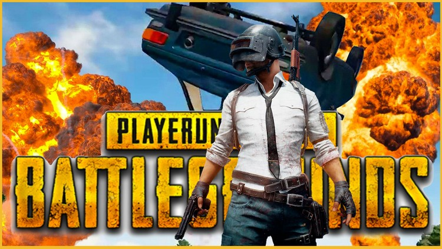
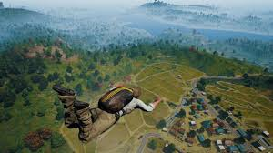
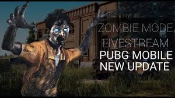
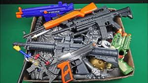
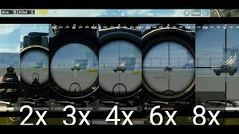
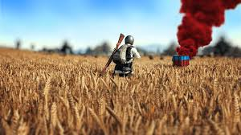
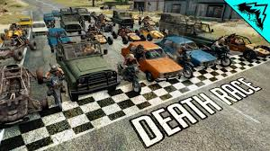

MAP
A map is a symbolic depiction emphasizing relationships between elements of some space

JOMBIES
Zombies in PUBG Mobile has recently been the grist for the rumour mill with the players coming across with the some dead bodies.

WEAPONS
They are the most satisfying to use but also the hardest to master these are an excellent weapon to use once you master.

SCOPES
If you find a scoped weapon, you will need to be in first person mode in order to use the scope, you will now see a zoomed view where you can aim.

DROP BOX
Air Drops can land in awkward or difficult places such as water or on rooftops and it is not unheard of for them to be found in unreachable locations.

VEHICLES
Motorcycles and dune buggies can offer some nice speed and handling.